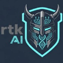

Best AI Coding Agents (2026)
AI coding agents, AI editors and CLI coding tools that write, edit and review code for you. Below are the top 20 of 177 matching tools in the AgentScout directory, ranked.
Updated
How we ranked: Ranked by GitHub stars as recorded on each AgentScout listing (link checks 2026-10-21). Tools without a tracked public repo come after, in alphabetical order. Stars measure developer popularity, not quality or fit for your job, so read each listing before you choose. No paid placements.
Quick comparison Top 10 of 20 listed below. Pricing as the maker states it; blank means we don't have it.
| Tool | Pricing | Best for | Open source |
|---|---|---|---|
| Open source | Write code | Yes | |
| Paid | Write code | ||
| Open source | Write code | Yes | |
| Open source | Write code | Yes | |
| Open source | Write code | Yes | |
| Open source | Write code | Yes | |
| Open source | Write code | Yes | |
| Open source | Write code | Yes | |
| Open source | Write code | Yes | |
| Open source + cloud | Write code | Yes |

1. opencode
Open-source terminal coding agent that works with many model providers.
Pricing (as stated): Open source · Active

2. Claude Code
Anthropic's terminal coding agent that edits code, runs commands and handles git.
Pricing (as stated): Paid (Claude plan or API) · Mature

3. CC Switch
Desktop manager for Claude Code, Codex, Gemini CLI, OpenCode, OpenClaw and other coding agents that switches API providers in one click and manages MCP servers, skills and prompts.
Pricing (as stated): Open source · Mature

4. OpenAI Codex CLI
OpenAI's open-source coding agent for the terminal; also runs in the cloud.
Pricing (as stated): Open source; uses ChatGPT plan or API · Mature

5. Graphify
Turns a codebase plus its docs, SQL schemas, configs and PDFs into a knowledge graph that coding agents can query.
Pricing (as stated): Open source · Mature

6. Pi
Minimal, extensible open-source terminal coding agent and agent toolkit from Earendil, with a multi-provider LLM API, TypeScript SDK, RPC mode and installable extensions, skills and themes.
Pricing (as stated): Open source (MIT); bring your own model provider or subscription · Mature

7. Gemini CLI
Google's open-source terminal agent powered by Gemini.
Pricing (as stated): Open source; free tier · Mature

8. Orca
Agent development environment for running a fleet of parallel coding agents on your own subscriptions and reviewing their work.
Pricing (as stated): Open source · Mature

9. Zed
High-performance, multiplayer code editor from the creators of Atom and Tree-sitter, with built-in AI agent editing for macOS, Linux and Windows.
Pricing (as stated): Open source · Mature

10. OpenHands
Open-source platform for autonomous coding agents.
Pricing (as stated): Open source + paid cloud · Mature

11. Understand-Anything
Turns any codebase, knowledge base or docs folder into an interactive knowledge graph you can explore and question, working inside Claude Code, Codex, Cursor, Copilot and Gemini CLI.
Pricing (as stated): Open source · Mature

12. rtk
A CLI proxy that sits between coding agents and your shell and trims noisy command output before it reaches the model, cutting token use on everyday commands like tests, builds and git. Free and open source, with an RTK Pro tier for teams.
Pricing (as stated): Free and open source (Apache-2.0); RTK Pro adds team features. · Mature

13. Cline
Autonomous coding agent inside VS Code with step-by-step approvals.
Pricing (as stated): Open source · Mature

14. Oh My OpenAgent (OmO)
Agent harness add-on (OmO) for OpenCode and Pi that runs multi-model coding agent teams with memory, planning and parallel workflows.
Pricing (as stated): See site · Mature

15. Open Interpreter
Terminal coding agent forked from OpenAI's Codex and tuned for low-cost and open-weight models, with switchable harness modes that imitate tools like Claude Code.
Pricing (as stated): Open source · Mature

16. Warp
Agentic development environment built from the terminal, now open source, for running coding agents and cloud software factories.
Pricing (as stated): Open source + cloud · Mature

17. Goose
Extensible open-source AI agent that installs, runs, edits and tests code on your machine with any LLM and MCP extensions.
Pricing (as stated): Open source · Mature

18. Open Code Review
Alibaba's AI code review CLI that combines deterministic pipelines with an LLM agent to post line-level comments on Git diffs, using OpenAI or Anthropic models.
Pricing (as stated): Open source · Mature

19. Herdr
Runtime for running and managing many coding agents side by side.
Pricing (as stated): Open source · Mature

20. Codewhale
Rust agent engine and terminal coding client with model choice, tool approvals and review flows.
Pricing (as stated): Open source · Mature
Browse by category
Related: Cursor alternatives · AI agents for writing code · Coding in the terminal
Related searches: Free AI coding agents with a free plan · Open-source AI coding agents · AI coding agents for the terminal (CLI)
More best-of lists: All best lists · Best AI Agent Frameworks · Best AI Browser Agents · Best Open-Source MCP Servers · Most-Starred Open-Source AI Agent Projects · Best Self-Hosted AI Agents · Best Free AI Agents (Free Plans) · Best No-Code AI Agent Builders · Best AI Voice Agent Platforms · Best AI Agent Observability & Eval Tools · Best Personal AI Agents · Best AI Agents for Business Teams · Best Crypto AI Agents
Facts come from our directory listings; pricing is as each maker states it and GitHub stars are as recorded on each listing. Check official sites before you choose.